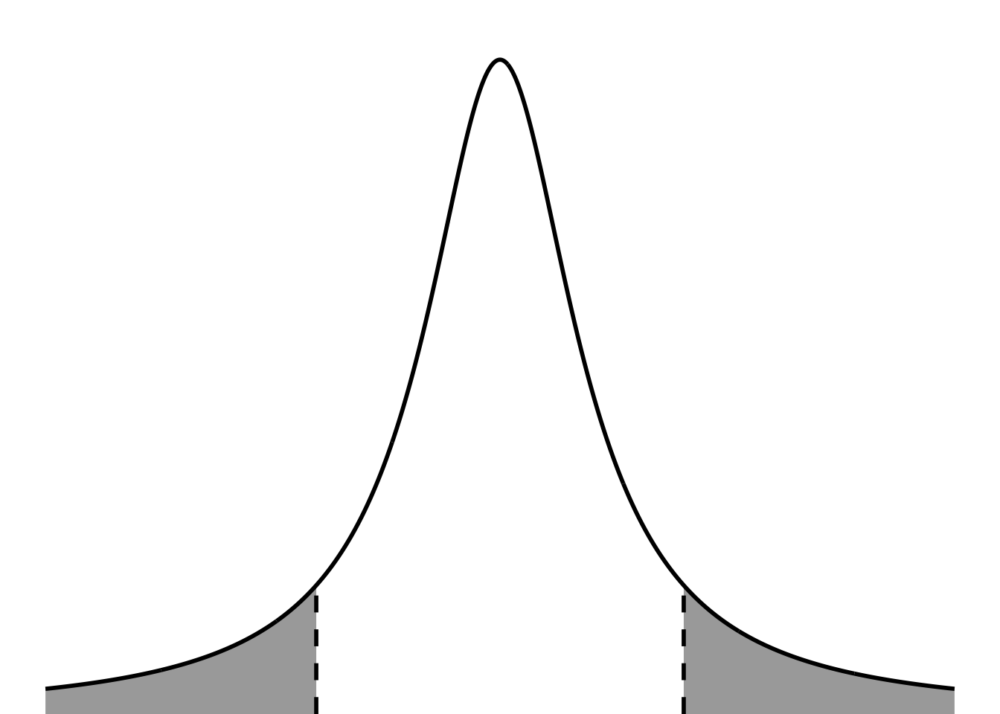

If you were to sample a bunch of times from any distribution (i.e. take many observations within a sample, take many observations in another sample), the mean values for each sample will be normally distributed. Kareem Carr has a nice explainer of how this works here.
Code
# randomly select 10000 numbers from a uniform distribution for the populationuniform <-runif(10000, min =2, max =8)# make a histogram for the populationuniformdf <-as.data.frame(uniform)ggplot(uniformdf, aes(x = uniform)) +geom_histogram(breaks =seq(2, 8, length.out =41), fill ="firebrick", alpha =0.7, color ="firebrick") +geom_vline(xintercept =mean(uniform), linewidth =2) +annotate("text", x =4, y =290, label ="mean = 4.967", size =10) +scale_x_continuous(breaks =seq(from =2, to =8, by =1)) +scale_y_continuous(expand =c(0, 0), limits =c(0, 305)) +labs(x ="Continuous value", y ="Count") +theme_bw() +theme(panel.grid =element_blank(),axis.text =element_text(size =18),axis.title =element_text(size =18))
t-distributions allow for more uncertainty around the tails.
Code
ggplot(data.frame(x =-5:5), aes(x)) +stat_function(geom ="line", n =1000, fun = dnorm, args =list(mean =0, sd =1), linewidth =1, color ="darkorange") +annotate("text", x =2.5, y =0.4, label ="normal", color ="darkorange", size =6) +stat_function(geom ="line", n =1000, fun = dt, args =list(df =1), linewidth =1, color ="#856F33") +annotate("text", x =3, y =0.32, label ="t-distribution (small n)", color ="#856F33", size =6) +stat_function(geom ="line", n =1000, fun = dt, args =list(df =10), linewidth =1, color ="#56E9E7") +annotate("text", x =3, y =0.37, label ="t-distribution (large n)", color ="#56E9E7", size =6) +scale_y_continuous(expand =c(0, 0), limits =c(0, 0.42)) +labs(x ="Continuous value", y ="Density") +theme(panel.grid =element_blank(),axis.text =element_text(size =18),axis.title =element_text(size =18),text =element_text(family ="Lato"))
b. visual representation of significance and t-statistic
Code
ggplot(data.frame(x =-5:5), aes(x)) +stat_function(geom ="area", fun = dt, args =list(df =19), xlim =c(1.8, 5), fill ="#0070c0") +stat_function(geom ="area", fun = dt, args =list(df =19), xlim =c(-5, -1.8), fill ="#0070c0") +stat_function(geom ="line", n =1000, fun = dt, args =list(df =19), linewidth =1, color ="#000000") +geom_hline(yintercept =0) +scale_y_continuous(expand =c(0, 0), limits =c(0, 0.4)) +theme_void() +theme(panel.grid =element_blank(),plot.margin =unit(c(1, 0, 0, 0), "cm"))
4. one vs two tailed figure
Code
two <-ggplot(data.frame(x =-5:5), aes(x)) +stat_function(geom ="area", fun = dt, args =list(df =1), xlim =c(3, 5), fill ="darkgrey") +geom_linerange(aes(x =3, ymin =0, ymax =0.032), linewidth =1, lty =2, color ="#000000") +stat_function(geom ="area", fun = dt, args =list(df =1), xlim =c(-5, -3), fill ="darkgrey") +geom_linerange(aes(x =-3, ymin =0, ymax =0.032), linewidth =1, lty =2, color ="#000000") +stat_function(geom ="line", n =1000, fun = dt, args =list(df =1), linewidth =1, color ="#000000") +scale_y_continuous(expand =c(0, 0), limits =c(0, 0.32)) +theme_void() +theme(panel.grid =element_blank())one <-ggplot(data.frame(x =-5:5), aes(x)) +stat_function(geom ="area", fun = dt, args =list(df =1), xlim =c(2, 5), fill ="darkgrey") +geom_linerange(aes(x =2, ymin =0, ymax =0.063), linewidth =1, lty =2, color ="#000000") +stat_function(geom ="line", n =1000, fun = dt, args =list(df =1), linewidth =1, color ="#000000") +scale_y_continuous(expand =c(0, 0), limits =c(0, 0.32)) +theme_void() +theme(panel.grid =element_blank())one + two
5. qqplot examples
We use qqplots (quantile-quantile plots) to visually evaluate the normality of some variable. The x-axis is the “theoretical” quantile, and the y-axis is the “sample” quantile. If the points follow a 1:1 line, then the variable is normally distributed.
The New Haven temperature data is normally distributed:
set.seed(1)creosote <-rnorm(n =41, mean =1.8, sd =0.3) %>%round(digits =2)
histogram and qq plot
Code
# calculate the rangerange <-max(creosote) -min(creosote)# determine the number of observationsobs <-length(creosote)# calculate the number of bins using the Rice Rule# note that this doesn't come out to a whole number, so it's roundedbins <-2*(obs^(1/3)) %>%round(digits =0)# calculate the width of the binbinwidth <- range/(bins -1)# set up a sequence of numbers from 0 to 100seq <-seq(from =1, to =11, by =1)# calculate the axis breaks axis_breaks <- seq*binwidth + (binwidth/2)# round the axis breaksaxis_breaks_rounded <-round(axis_breaks, digits =3)hist <- creosote %>%enframe() %>%ggplot(aes(x = value)) +geom_histogram(binwidth = binwidth,fill ="#e3c922",color ="black") +scale_x_continuous(breaks = axis_breaks_rounded) +scale_y_continuous(expand =c(0, 0),limits =c(0, 14)) +labs(x ="Creosote height (m)",y ="Count")qq <- creosote %>%enframe() %>%ggplot(aes(sample = value)) +geom_qq_line() +geom_qq(color ="#e3c922",size =4,alpha =0.8) hist + qq
# claimed meanmu <-3# number of observationsn <-length(creosote)# sample meanybar <-mean(creosote)# sample standard deviations <-sd(creosote)# sample standard errorse <- s/sqrt(n)# t-scoret <- (ybar-mu)/set
[1] -28.56624
Using t.test()
Code
t.test(creosote, mu =3)
One Sample t-test
data: creosote
t = -28.566, df = 40, p-value < 2.2e-16
alternative hypothesis: true mean is not equal to 3
95 percent confidence interval:
1.743305 1.909378
sample estimates:
mean of x
1.826341
Manually calculating p-value:
Code
# manually calculating p-value# two-tailed: multiply probability by 2# lower = FALSE: probability of the value being more than t2*pt(q = t, df = n -1, lower =TRUE)
[1] 3.158646e-28
visual representation of sample t-statistic vs t-critical
Code
ggplot(data.frame(x =-5:5), aes(x)) +stat_function(geom ="area", fun = dt, args =list(df =1), xlim =c(t_critical, 5), fill ="darkgrey") +stat_function(geom ="area", fun = dt, args =list(df =1), xlim =c(-5, -t_critical), fill ="darkgrey") +annotate(geom ="linerange", x = t_critical, ymin =0, ymax =0.065, linewidth =1, lty =2, color ="#000000") +annotate(geom ="linerange", x =-t_critical, ymin =0, ymax =0.065, linewidth =1, lty =2, color ="#000000") +# annotate(geom = "linerange", x = t, ymin = 0, ymax = 0.075, linewidth = 1, color = "#000000") +# annotate(geom = "linerange", x = -t, ymin = 0, ymax = 0.075, linewidth = 1, color = "#000000") +stat_function(geom ="line", n =1000, fun = dt, args =list(df =1), linewidth =1, color ="#000000") +scale_y_continuous(expand =c(0, 0), limits =c(0, 0.32)) +theme_void() +theme(panel.grid =element_blank(),plot.margin =unit(c(1, 0, 0, 0), "cm"))

7. two-sample t-test
Code
ex1 <-ggplot(data.frame(x =-8:8), aes(x)) +stat_function(geom ="line", n =100, fun = dnorm, args =list(mean =0, sd =2), linewidth =2, color ="#FF6B2B") +geom_vline(aes(xintercept =0), color ="#FF6B2B", lty =2, linewidth =2) +stat_function(geom ="line", n =100, fun = dnorm, args =list(mean =1, sd =2), linewidth =2, color ="#00A38D") +geom_vline(aes(xintercept =1), color ="#00A38D", lty =2, linewidth =2) +scale_y_continuous(expand =c(0, 0), limits =c(0, 0.21)) +theme_void() +theme(plot.margin =unit(c(1, 1, 1, 1), "cm"))set.seed(2)x <-rnorm(30, mean =0, sd =2)y <-rnorm(30, mean =1, sd =2)t.test(x = x, y = y, var.equal =TRUE)
Two Sample t-test
data: x and y
t = -0.78852, df = 58, p-value = 0.4336
alternative hypothesis: true difference in means is not equal to 0
95 percent confidence interval:
-1.6721807 0.7270662
sample estimates:
mean of x mean of y
0.4573436 0.9299009
Code
# 0.43
Code
ex2 <-ggplot(data.frame(x =-8:17), aes(x)) +stat_function(geom ="line", n =100, fun = dnorm, args =list(mean =0, sd =2), linewidth =2, color ="#FF6B2B") +geom_vline(aes(xintercept =0), color ="#FF6B2B", lty =2, linewidth =2) +stat_function(geom ="line", n =100, fun = dnorm, args =list(mean =2, sd =2), linewidth =2, color ="#00A38D") +geom_vline(aes(xintercept =2), color ="#00A38D", lty =2, linewidth =2) +scale_y_continuous(expand =c(0, 0), limits =c(0, 0.21)) +theme_void() +theme(plot.margin =unit(c(1, 1, 1, 1), "cm"))set.seed(1000000000)x <-rnorm(30, mean =0, sd =2)y <-rnorm(30, mean =2, sd =2)t.test(x = x, y = y, var.equal =TRUE)
Two Sample t-test
data: x and y
t = -3.7904, df = 58, p-value = 0.0003603
alternative hypothesis: true difference in means is not equal to 0
95 percent confidence interval:
-2.7905631 -0.8617609
sample estimates:
mean of x mean of y
0.1435745 1.9697364
Code
# 0.6932
Code
ex3 <-ggplot(data.frame(x =-8:17), aes(x)) +stat_function(geom ="line", n =100, fun = dnorm, args =list(mean =0, sd =2), linewidth =2, color ="#FF6B2B") +geom_vline(aes(xintercept =0), color ="#FF6B2B", lty =2, linewidth =2) +stat_function(geom ="line", n =100, fun = dnorm, args =list(mean =10, sd =2), linewidth =2, color ="#00A38D") +geom_vline(aes(xintercept =10), color ="#00A38D", lty =2, linewidth =2) +scale_y_continuous(expand =c(0, 0), limits =c(0, 0.21)) +theme_void() +theme(plot.margin =unit(c(1, 1, 1, 1), "cm"))set.seed(100)x <-rnorm(40, mean =0, sd =2)y <-rnorm(40, mean =10, sd =2)t.test(x = x, y = y, var.equal =TRUE)
Two Sample t-test
data: x and y
t = -21.69, df = 78, p-value < 2.2e-16
alternative hypothesis: true difference in means is not equal to 0
95 percent confidence interval:
-10.564878 -8.788488
sample estimates:
mean of x mean of y
0.2003543 9.8770375
Code
# p < 0.001
Code
ex1 + ex2 + ex3
same differences in means, different SD
Code
small <-ggplot(data.frame(x =-6:9), aes(x)) +stat_function(geom ="line", n =100, fun = dnorm, args =list(mean =0, sd =2), linewidth =2, color ="#FF6B2B") +geom_vline(aes(xintercept =0), color ="#FF6B2B", lty =2, linewidth =2) +stat_function(geom ="line", n =100, fun = dnorm, args =list(mean =3, sd =2), linewidth =2, color ="#0070C0") +geom_vline(aes(xintercept =3), color ="#0070C0", lty =2, linewidth =2) +scale_y_continuous(expand =c(0, 0), limits =c(0, 0.21)) +theme_void() +theme(plot.margin =unit(c(1, 1, 1, 1), "cm"))big <-ggplot(data.frame(x =-6:9), aes(x)) +stat_function(geom ="line", n =100, fun = dnorm, args =list(mean =0, sd =0.5), linewidth =2, color ="#FF6B2B") +geom_vline(aes(xintercept =0), color ="#FF6B2B", lty =2, linewidth =2) +stat_function(geom ="line", n =100, fun = dnorm, args =list(mean =3, sd =0.5), linewidth =2, color ="#0070C0") +geom_vline(aes(xintercept =3), color ="#0070C0", lty =2, linewidth =2) +scale_y_continuous(expand =c(0, 0), limits =c(0, 0.8)) +theme_void() +theme(plot.margin =unit(c(1, 1, 1, 1), "cm"))diff <-ggplot(data.frame(x =-6:9), aes(x)) +stat_function(geom ="line", n =100, fun = dnorm, args =list(mean =0, sd =0.5), linewidth =2, color ="#FF6B2B") +geom_vline(aes(xintercept =0), color ="#FF6B2B", lty =2, linewidth =2) +stat_function(geom ="line", n =100, fun = dnorm, args =list(mean =3, sd =1.25), linewidth =2, color ="#0070C0") +geom_vline(aes(xintercept =3), color ="#0070C0", lty =2, linewidth =2) +scale_y_continuous(expand =c(0, 0), limits =c(0, 0.85)) +theme_void() +theme(plot.margin =unit(c(1, 1, 1, 1), "cm"))small / big / diff
F-distribution
Code
ggplot(data.frame(x =seq(from =0, to =4, by =0.1)), aes(x)) +stat_function(geom ="line", fun = df, args =list(df1 =20, df2 =20), color ="#FF6B2B", linewidth =1, xlim =c(0, 4)) +stat_function(geom ="line", fun = df, args =list(df1 =5, df2 =5), color ="#0070C0", linewidth =1, xlim =c(0, 4)) +stat_function(geom ="line", fun = df, args =list(df1 =1, df2 =5), linewidth =1, xlim =c(0, 4)) +annotate("text", x =1.5, y =1, label ="20, 20", color ="#FF6B2B", size =8) +annotate("text", x =-0.2, y =0.5, label ="5, 5", color ="#0070C0", size =8) +annotate("text", x =0.5, y =1.5, label ="1, 5", size =8) +scale_y_continuous(expand =c(0, 0)) +theme(axis.text =element_blank(),axis.line =element_blank(),axis.ticks =element_blank(),axis.title =element_blank())
F-distribution example
Code
set.seed(1)rats <-rnorm(n =20, mean =178, sd =43)set.seed(1)mice <-rnorm(n =20, mean =120, sd =20)mean(rats)
[1] 186.1925
Code
mean(mice)
[1] 123.8105
Code
var(rats)
[1] 1542.126
Code
var(mice)
[1] 333.6129
Code
var(rats)/var(mice)
[1] 4.6225
Code
var.test(rats, mice)
F test to compare two variances
data: rats and mice
F = 4.6225, num df = 19, denom df = 19, p-value = 0.001619
alternative hypothesis: true ratio of variances is not equal to 1
95 percent confidence interval:
1.829642 11.678519
sample estimates:
ratio of variances
4.6225
Code
t.test(rats, mice, var.equal =TRUE)
Two Sample t-test
data: rats and mice
t = 6.4415, df = 38, p-value = 1.414e-07
alternative hypothesis: true difference in means is not equal to 0
95 percent confidence interval:
42.77708 81.98702
sample estimates:
mean of x mean of y
186.1925 123.8105
Code
t.test(rats, mice, var.equal =FALSE)
Welch Two Sample t-test
data: rats and mice
t = 6.4415, df = 26.853, p-value = 6.84e-07
alternative hypothesis: true difference in means is not equal to 0
95 percent confidence interval:
42.50629 82.25781
sample estimates:
mean of x mean of y
186.1925 123.8105